レア
桜の下で花見
春、桜の下で花見をする場面。花びらの舞う中でお弁当を広げる、日本の春の定番の楽しみです。四季の移ろいに触れる第3弾の幕開け。
第3弾「日本の四季編」のカード全30種です。お花見、夏祭りと花火、月見、紅葉狩り、初雪、初詣と、日本の一年をめぐる場面です。
カードの画像はWeb鑑賞用サイズです。原画の高解像度イラストは、この弾のイラストパックでご覧いただけます。
この弾の所持 0 / 30種（0%）― あと30種で、この弾はコンプリートです
カードの画像はWeb鑑賞用サイズです。原画の高解像度イラストは第3弾『日本の四季編』のパック紹介ページからBOOTHのパックでご覧いただけます。ガチャで所持しているカードには「所持 ×N」と表示されます。
レア
春、桜の下で花見をする場面。花びらの舞う中でお弁当を広げる、日本の春の定番の楽しみです。四季の移ろいに触れる第3弾の幕開け。
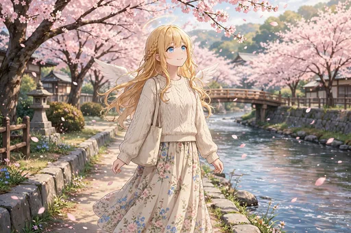
ノーマル
桜並木を私服で散歩する場面。花見の賑わいとは違う、静かな春の午後です。季節の景色が日常に溶け込んできました。
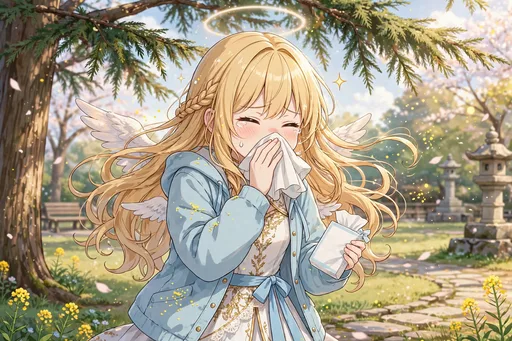
ノーマル
花粉でくしゃみをする場面。春の心地よさと一緒にやってくる試練に、天使も少し困り顔です。日本の春あるあるのひとつ。
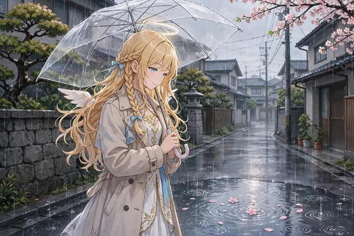
ノーマル
春雨の中、傘をさして歩く場面。静かに降る雨と桜の景色に、しっとりとした春を感じています。
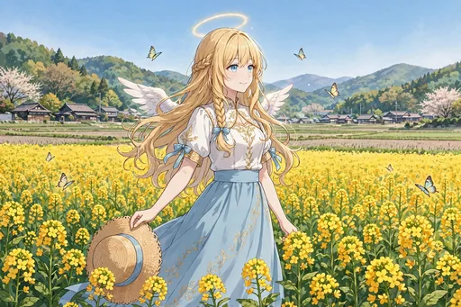
ノーマル
一面の菜の花畑に立つ場面。黄色の絨毯のような景色に、思わず深呼吸をしてしまいます。春の野原の贈り物です。
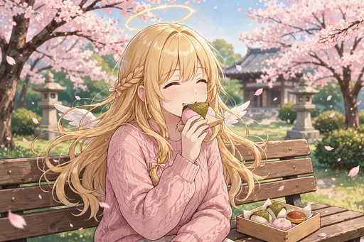
ノーマル
桜餅をほおばる場面。桜の葉の香りとやさしい甘さに、春の味覚を満喫しています。季節の和菓子との出会いです。

レア
夜桜を見物する場面。ライトアップされた桜と夜の静けさが、昼とは違う表情を見せています。春の夜の特別な時間です。
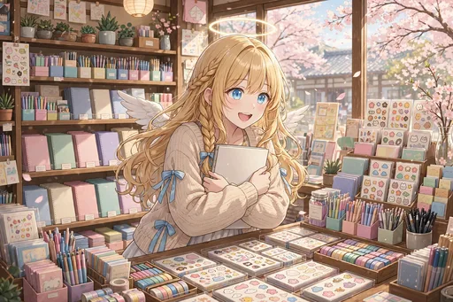
ノーマル
新しいノートと文房具にときめく場面。新年度の始まりに、心機一転の道具選びを楽しんでいます。春は始まりの季節です。
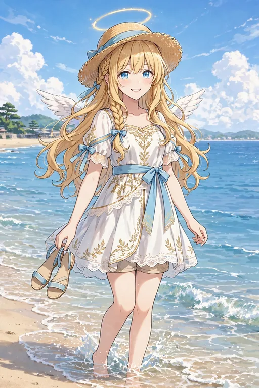
ノーマル
夏、海辺で麦わら帽子をかぶる場面。波の音と日差しの中で、日本の夏休み気分を味わっています。四季編・夏の始まりです。
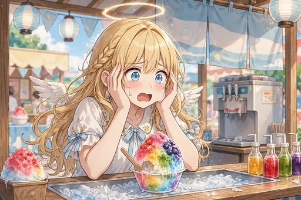
ノーマル
かき氷を食べて頭がキーンとなる場面。夏の風物詩の洗礼を受けながらも、冷たい甘さは格別です。
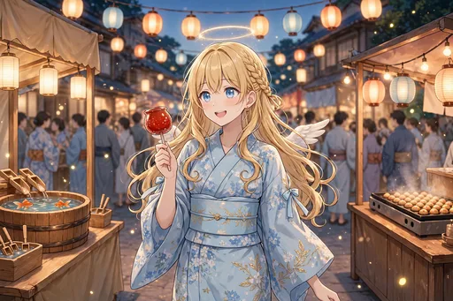
ノーマル
夏祭りの屋台を巡る場面。焼きそばや射的など、提灯の明かりの下で祭りの賑わいを楽しんでいます。
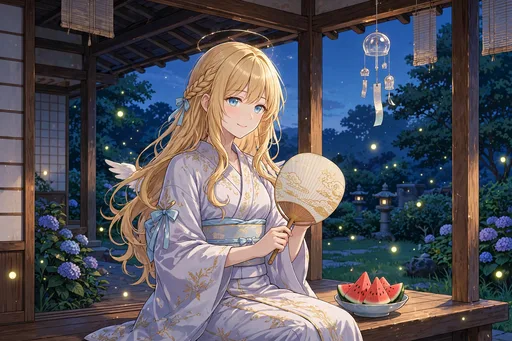
レア
浴衣姿で夕涼みをする場面。祭りのあとの静かな夕方に、夏の余韻を味わっています。日本の夏の装いがよく似合う一枚。

激レア
夜空の花火を見上げる場面。大きな花が開くたびに歓声が上がる、夏の夜の一大行事です。第3弾を代表する、キービジュアル級の一枚。
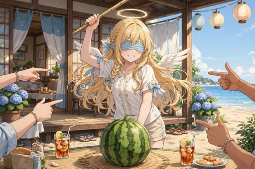
ノーマル
スイカ割りに挑戦する場面。目隠しをして、周りの声を頼りに棒を振り下ろします。夏の遊びの定番です。
ノーマル
扇風機の前で「あー」と声を出す場面。誰もが一度はやったことのある夏の遊びに、天使も無邪気にはしゃいでいます。
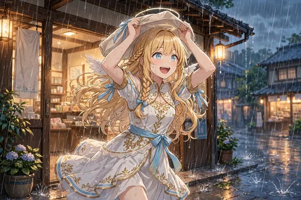
ノーマル
夕立に遭って軒下に駆け込む場面。突然の雨も、夏の夕方の風物詩です。雨宿りの短い時間もまた季節の味わい。
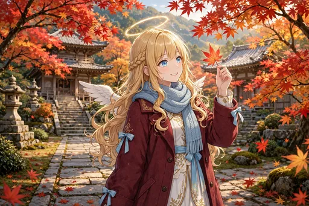
ノーマル
秋、紅葉狩りに出かける場面。色づいた山の景色に見とれながら、深まる秋を感じています。四季編・秋の始まりです。
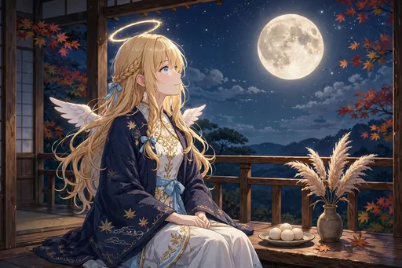
ノーマル
月見団子を供えて月を眺める場面。静かな秋の夜に、昔ながらの行事の心地よさを味わっています。
ノーマル
図書館で読書にふける、読書の秋の場面。静かな空間で本の世界に浸る時間は、天使にとっても大切な休息です。
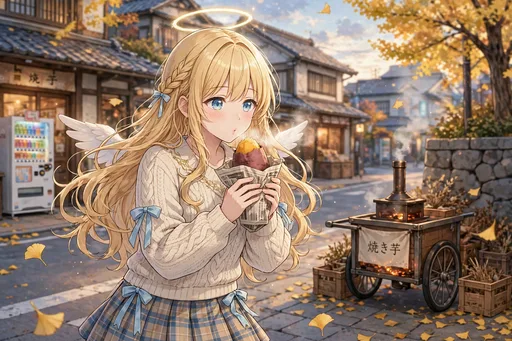
ノーマル
焼き芋をふうふうしながらほおばる場面。熱々の甘さに、秋の味覚の幸福感が広がります。ほくほくの笑顔の一枚。
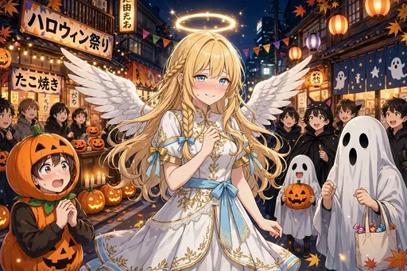
レア
ハロウィンに天使コス（本物）で参加する場面。仮装のつもりが本物なので、周りからは「クオリティが高い」と褒められます。秋の行事の名場面です。
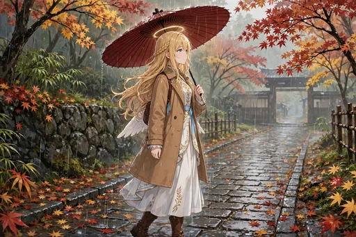
ノーマル
秋雨の落ち葉の道を歩く場面。しっとりとした静けさの中で、季節の終わりの気配を感じています。
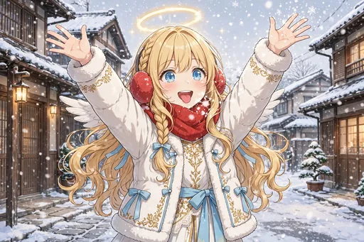
ノーマル
冬、初雪ではしゃぐ場面。空から舞う雪に手を伸ばして、子どものようにはしゃいでいます。四季編・冬の始まりです。
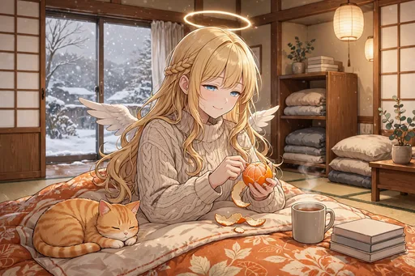
レア
こたつでみかんを食べる場面。日本の冬の幸せの象徴に、すっかり骨抜きにされています。冬の快適さに染まる一枚です。
激レア
クリスマスのイルミネーションに包まれる場面。街が光で彩られる季節に、天使の姿がよく映えます。第3弾を代表するキービジュアル級の一枚。
ノーマル
大晦日に年越しそばをすする場面。一年の締めくくりの静かな食卓で、過ぎた日々を振り返っています。
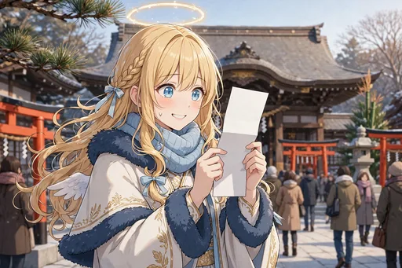
レア
初詣でおみくじを引く場面。結果に一喜一憂しながらも、新しい年への願いを込めています。第1弾で覚えた参拝の作法も板についてきました。
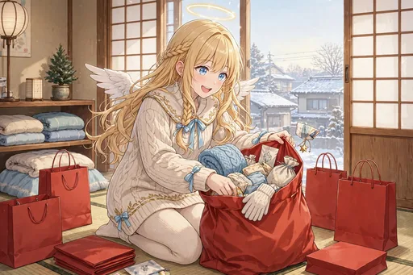
レア
福袋を開ける瞬間の場面。中身への期待とドキドキは、新年の楽しみのひとつです。ガチャ好きの血が騒ぐ行事でもあります。
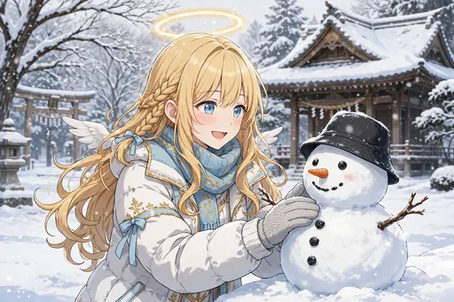
ノーマル
雪だるまを作る場面。形を整えて、小さな力作の完成に満足げです。冬の遊びを存分に楽しんでいます。
ノーマル
大晦日の夜、静かに祈る場面。賑やかな一年を締めくくる、セラフィナらしい穏やかな時間です。四季を通じて日本の暮らしに寄り添った第3弾の結び。